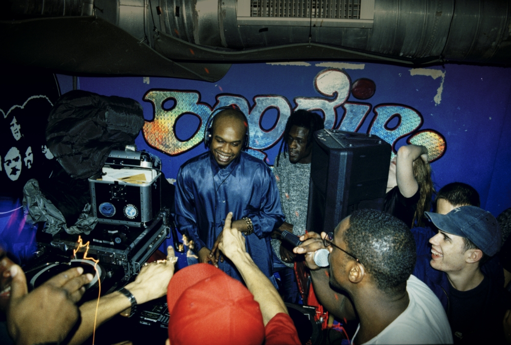

Jungle reached the peak of its popularity in 1994/1995. At this stage, the genre was achieving a number of UK top 40 hits, most notably "Incredible" by M-Beat featuring General Levy, and spawned a series of CD compilations such as Jungle Mania and Jungle Hits. Controversy raged over the success of "Incredible" when Levy reportedly made comments in the media that he was "running jungle at the moment". Although Levy always argued that his comments were misinterpreted, this did not fail to stop a boycott of the single amongst a group of DJs that were dubbed as the "Jungle Committee". Labels such as Ibiza, 3rd Party and Kemet were prolific in their releases.
Having previously been confined to pirate radio, legal stations woke up to jungle from 1994. London's Kiss 100 launched its Givin' It Up show in early 1994 and featured DJs such as Kenny Ken, Jumpin Jack Frost, DJ Rap, and Mickey Finn. A year later, the UK's nationwide broadcaster BBC Radio 1 finally gave jungle a platform on its One in the Jungle weekly show.
Major labels such as Sony and BMG were signing deals with artists including A Guy Called Gerald, Kemet, and DJ Ron. Of these, Roni Size and 4hero would achieve wider commercial success as drum and bass artists, but continued to release more underground jungle tracks — the latter adopting the alias Tom & Jerry to continue to release rare groove sampling dancefloor-oriented jungle. The underground classic "Burial" by Leviticus would see a major release on FFRR Records.
Jungle music, as a scene, was unable to decide whether it wanted to be recognised in the mainstream or if it wanted to avoid misrepresentation. This manifested in the cooperation of jungle artists and small record labels. Small record labels worked to provide more autonomy to the music artists in return for their business and jungle music was proliferated by pirate stations in underground networks and clubs. Whilst the media would in part feed off jungle music success, it also perpetuated negative stereotypes about the scene as being violent. The seminal 1994 documentary A London Some 'Ting Dis, chronicled the growing jungle scene and interviewed producers, DJs, and ravers to counter this perception.[15][16]
1996 and 1997 saw a less reggae-influenced sound and a darker, grittier, and more sinister soundscape. Hip-hop and jazz-influenced tracks dominated the clubs in this period. Dillinja, Roni Size, Die, Hype, Zinc, Alex Reece and Krust were instrumental in the transition of the jungle sound to drum and bass. By the end of 1998, the genre's sound had changed forms significantly from the sound heard earlier in the decade.